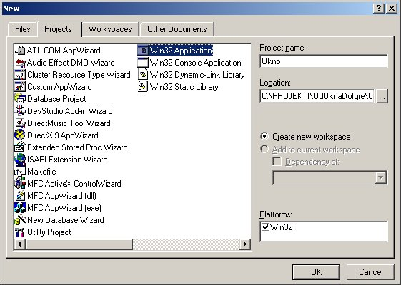
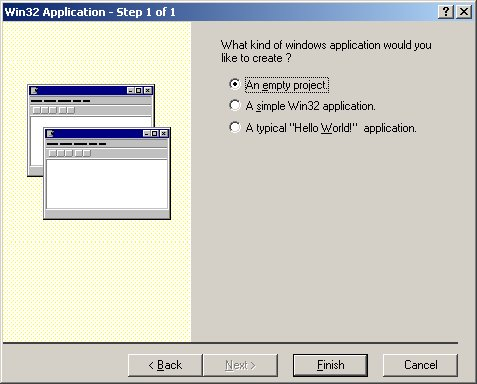
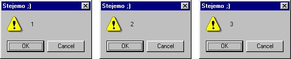

| Od okna do igre: 1.del
Avtor: Ozzy
Objavljeno: 10.03.2004, ob 18:44:06.
Avtor je priložil datoteko z izvorno kodo! Download
1. DEL: Moj prvi okenski program
Uvod.
Končno, po dolgem času spet nekaj
malice za SGD-jevske C++arje. Pričujoči članek je začetek serije člankov z
naslovom "Od okna do igre". Skozi to serijo se boste najprej seznanili s tem,
kako v C++ ustvariti svoje prvo okno, na koncu pa bo prišla na vrsto izdelava
preproste 2D igrice. Skozi poglavja bomo obdelali obilico različnih tem. Za
začetek si bomo ogledali kako ustvarimo naše prvo okno in kako ga kontroliramo,
nato bomo za osnovo spoznali delo z grafiko pod okni, preko vmesnika GDI. Ko bomo osvojili osnove, se bomo pomaknili na
naslednji nivo: DirectX oziroma Direct3D, ki nam bo omogočil izgradnjo
preprostega 2D grafičnega srčka. Vmes se bomo naučili še kaj o osnovah
računalniških iger, predvsem kaj je to glavna zanka igre in kako jo
uporabljamo. Na koncu pa bomo s pomočjo našega grafičnega srčka razvili
preprosto igro.
Preden preidemo na konkretne
zadeve še nekaj informacij o seriji. Serija bo predstavljena s programskim
jezikom C++. Čeprav bodo morda komu, ki dobro obvlada programiranje v kakšnem
drugem jeziku (pa se še ni srečal s C++) stvari razumljive, je vsaj osnovno
znanje C++ priporočljivo. Kot razvojno okolje bom uporabljal Microsoft Visual
Studio 6.0, vi pa lahko uporabite kakšno novejšo verzijo. Zraven razvojnega
okolja boste pri kasnejših člankih potrebovali tudi Microsoft DirectX SDK. Kje
ga lahko najdete boste izvedeli kasneje. Grafični motor, ki ga bomo gradili bo
(najverjetneje) zgrajen na verziji DirectX 8.1. Za to verzijo sem se odločil,
ker med verzijama 8.1 in 9 ni tako velikih razlik, sam pa bolj obvladam verzijo
8.1.. Komurkoli, ki bi se odločil za predelavo motorja v novejšo verzijo
DirectX, naj to ne bi predstavljalo večjih težav. Mogoče se bo našel kdo, ki se
z mojo izbiro orodij ne bo strinjal, ampak sam se držim znanega angleškega
pregovora "If it ain't broken, why fix it"...
Sedaj pa je že čas da se lotimo
konkretnega dela.
1.1 Windows API
Windows API?
Novinci boste verjetno rekli: "Tip je rekel, da nas bo učil osnov, sedaj pa nas
že posiljuje s kraticami", ostali pa se boste verjetno samo nasmehnili in si
mislili, ko potrbuješ hitrost, drugače pač ne gre. Pa si najprej razjasnimo
pojme kaj je to Windows Application
Programming Interface, krajše poimenovan Window API. Windows API je vmesnik preko katerega dostopamo do osnovnih
funkcij operacijskega sistema, kot so odpiranje oken, premikanje oken,
odzivanje na dogodke itd... API nam
torej predstavlja vmesno plast med našim programom in opravili, ki se dogajajo
v operacijskem sistemu.
Zakaj API?
Odgovor je preprost, ker je učinkovit in ker kompleksnejših stvari ne
potrebujemo. Tisti, ki ste se že spoznali z MFC
(Microsoft Foundation Classes) ali
kakšnim okoljem za hitri razvoj aplikacij (RAD - rapid application development, recimo
Delphi) sedaj verjetno niste preveč
zadovoljni, saj veste, da nam ta orodja omogočajo zelo hitro kreiranje oken in
uporabniškega vmesnika. Že, a zaradi tega tečejo za našim programom zelo
kompleksni pogoni, katerih 90 odstotkov možnosti pri razvoju iger ne potrebujemo,
vse skupaj pa teče še zelo počasi. Morda je z uporabo API
res potrebno napisati nekoliko vrstic več programske kode, vendar to v splošnem
ni problem, saj funkcije API
ponavadi potrebujemo le za kreiranje in odpiranje okna v katerem teče igra, ter
odzivanje na dogodke, ki jih prožita miška in tipkovnica.
1.2 Prvi korak - projekt
Kratek teoretični uvod je za nami. Preden pa se spustimo v
kodo, si moramo pripraviti okolje v katerem bomo delali. Najprej moramo
ustvariti nov projekt, kar naredimo na naslednji način: V meniju izberemo
možnost File, nato New in v pogovornem oknu izberemo
zavihek Projects. Med ponujenimi
možnostmi izberemo Win32 Application
(Slika 1.1), s čemer označimo da želimo čisto API
aplikacijo. Preden gremo naprej, na desni strani pogovornega okna pod Project name vpišemo še ime projekta ter
v polju Location določimo imenik v
katerem želimo imeti shranjen naš projekt (opomba: Visual C++ dejansko tvori v
tem imeniku podimenik, ki je enak imenu projekta, in cel projekt shrani v podimenik).
Ko pritisnemo gumb OK se nam pojavi
novo pogovorno okno v katerem lahko izbiramo med nekaj že vnaprej
pripravljenimi aplikacijami. Ker želimo biti prvorazredni koderji in ves čas
vedeti kaj se dogaja, bomo vse od A do Ž postorili sami. Zato izberemo prazen
projekt - An Empty Project - (Slika
1.2) in pritisnemo gumb Finish.

Slika 1.1: Kot projekt bomo izbrali naravno (native) Win32 aplikacijo.

Slika 1.2: Ker želimo biti pravi koderji, bomo sami napisali vse, zato izberemo prazen projekt.
Tako, projekt imamo, potrebujemo le še datoteko v katero
bomo pisali naš program. V meniju spet izberemo možnost File in nato New. Ker
želimo ustvariti datoteko, najprej izberemo zavihek Files, nato pa v seznamu poiščemo možnost C++ Source File. Sedaj moramo le še vpisati ime datoteke v polje File Name. Sam sem datoteko poimenoval
GlavniProgram, vi pa jo lahko poimenujte kakor želite. Ker bomo imeli zaenkrat celoten program
zapisan v eni datoteki, imamo vse pripravljeno, da se lotimo programske kode.
1.3 Programiramo pod okni
Za začetek bomo napisali naš prvi okenski program. Ker se
nameravam tudi v pihodnje držati načela, najprej koda, nato razlaga, je
najboljše, da tako tudi začnemo. Naš prvi okenski program izgleda takole:
#include <windows.h>
int WINAPI WinMain(HINSTANCE hInstance, HINSTANCE hPrevInstance, LPSTR lpCmdLine, int cmdShow)
{
return 0;
}
Lotimo se kode vrstico za vrstico. Ker želimo uporabljati
funkcije Windows API, ki jih C++
sam po sebi ne pozna, moramo najprej vključiti knjižnico, kjer so definirane API funkcije. To je ravno knjižnica "Windows.h".
Sedaj je torej tudi ta problem rešen, tako da lahko napišemo vstopno funkcijo
našega progama.
Prva stvar, ki jo pri našem programu potrebujemo je
vstopna točka programa, torej točka v kateri se program začne izvajati. Medtem,
ko je pri konzolnih aplikacijah, vstopna funkcija main(), ki ne premore nobenih
argumentov, je pri programiranju okenskih programov stvar malce bolj zapletena.
Tukaj se vstopna funkcija imenuje WinMain
in vsebuje štiri parametre: hInstance,
hPrevInstance, lpCmdLine in cmdShow.
Verjamem, da se novinci ponovno držite za glavo. Brez skrbi, za vsakega od
parametrov bomo povedali čemu je namenjen, ob tem pa bomo spoznali še nekaj
skrivnosti oken. Poglejmo si torej parametre funkcije WinMain:
-
hInstance.
Na začetku je potebno poudariti, da
se v ozadju oken skriva veliko stvari, kot so aplikacije, okna, gumbi itd., ki
jih nadzoruje operacijski sistem. Da se vse to lahko nadzoruje, je potrebno
vsakemu od teh objektov dodeliti unikatno identifikacijsko številko. Tej
številki pravimo ročaj oziroma handle. Instanca oziroma instance
pa predstavlja aplikacijo. Kadarkoli poženemo kakšno aplikacijo, ustvarimo v
pomnilniku instanco te aplikacije, če poženemo aplikacijo dvakrat, ustvarimo v
pomnilniku dve različni instanci aplikacije. Beseda hInstance je tako okrajšava za handle
to instance oziroma slovensko ročaj
instance. Skozi poglavja bomo spoznali, da se podoben zapis (kot hInstance
–> handle to instance) uporablja za različne stvari. Takšnemu načinu pisanja
pravimo Madžarska notacija (Hungarian notation), več o njej pa si
lahko preberete na spletu. Preko parametra hInstance lahko torej dobimo ročaj
oziroma identifikacijsko številko naše aplikacije. Ta ročaj je zelo pomemben,
saj ga rabimo da lahko klice funkcij API
povežemo z našo aplikacijo.
- hPrevInstance.
Parameter predstavlja ostanek iz
časov, ko so bila okna še 16-bitni operacijski sistem, pri 32-bitnih sistemih
pa je popolnoma nepotreben. Zaradi tega ga lahko preprosto preskočimo. Omenimo
le, da naj bi bila vrednost tega parametra vedno NULL.
- pstrCmdLine.
PstrCmdLine je parameter preko katerega lahko našemu programu podamo
zunanje parametre, če program zaženemo iz ukazne vrstice. Ker pri programiranju
iger pazimo na srečo uporabnikov, ki ne želijo programov poganjati iger iz
ukazne vrstice, si ga ne bomo podrobneje ogledali. Morda le omenimo, da
parameter, vsebuje seznam nizov, ki predstavljajo vhodne parametre, če so le ti
podani, seveda.
- cmdShow.
CmdShow predstavlja parameter, ki določa v
kakšnem načinu naj se prikaže okno ob zagonu programa. Ta vrednost je
pridobljena iz operacijskega sistema. Več o tem malce kasneje.
Spoznali smo parametre vstopne funkcije, vendar nam za
delujoč program manjka še ena stvar. Ker je WinMain funkcija, ki vrača
vrednosti tipa integer (int), moramo
ob koncu funkcije vrniti še eno vrednost. Ker se je naš program uspešno
izvedel, ob koncu s pomočjo ukaza return
vrnemo vrednost 0. (Opomba: Vrednost 0 v oknih predstavlja uspešno izvedeno
funkcijo).
Sedaj lahko naš program poženemo. Izberemo meni Build in podmeni Execute. Na žalost se na ekranu ne bo prikazalo nič, čeprav se je
program izvedel uspešno. Ker smo progamerji igric vizualno orientirani ljudje,
si seveda želimo, da se kaj vidi. Za začetek bo dovolj že če spoznamo
sporočilna okna (MessageBox).
1.4 Sporočilna okna
Za sporočilna okna bi lahko rekli, da so programerjev
najboljši prijatelj, ker jih je zelo preprosto sprogramirati. Še bolj pa so
priljubljena piscem člankov, ki opisujejo osnove programiranja pod okni, ker
lahko le-ti z eno vrstico kode naredijo velik vtis na novopečenega programerja.
Pa napišimo program, ki bo prikazal sporočilno okno:
#include <windows.h>
int WINAPI WinMain(HINSTANCE hInstance, HINSTANCE hPrevInstance, LPSTR lpCmdLine, int cmdShow)
{
MessageBox(NULL, "Hmm, tole mi je ze bolj vsec...", "YUUUHU", MB_OK | MB_ICONEXCLAMATION);
return 0;
}
Sedaj poženite naš programček. Hitro in učinkovito, ne?!
Da nam bo bolj jasno za kaj gre pri vsej stvari, si natančneje poglejmo
funkcijo MessageBox, kiskrbi za prikazovanje sporočilnih oken. Njen
prototip izgleda takole:
int MessageBox(HWND hWnd, PCSTR pstrMessage, PCSTR pstrCaption, UINT uType)
Kot vidimo je potrebno funkciji MessageBox podati štiri parametre. Pa si jih oglejmo:
- hWnd.Že iz imena parametra, ki vsebuje na začetku mali h (torej handle) lahko sklepamo, da moramo kot vrednost podati ročaj. Ker je
Wnd okrajšava za window, je hitro jasno, da kot vrednost parametra hWnd podamo ročaj okna, ki je lastnik
našega sporočilnega okna. Ker zaenkrat nimamo še nobenega okna, lahko kot
vrednost podamo kar NULL, kar pomeni, da naše sporočilno okence ne bo povezano
z ničemer.
- pstrMessage. Parameter v katerega podamo tekst, ki
ga želimo izpisati v našem sporočilnem oknu.
- pstrCaption. V ta parameter podamo tekst, ki ga želimo imeti izpisanega v naslovni vrstici
našega okna.
- uType.S parametrom uType določimo stil
sporočilnega okna, torej kako želimo, da okno izgleda. Čeprav je možnih več
stilov, si bomo ogledali le nekaj najpomembnejših:
- MB_OK. Sporočilno okno naj ima gumb ok.
- MB_OKCANCEL. Sporočilno okno naj ima gumba OK in Cancel.
- MB_ICONEXCLAMATION. Sporočilno okno naj prikaže opozorilni znak.
- MB_ICONQUESTION. Sporočilno okno naj prikaže vprašaj.
Druge možnosti lahko najdete v
MSDN. Povejmo še, da lahko možnosti kombiniramo s pomočjo bitnega operatorja
ali (bitwise OR operator), ki ga v
C++ zapišemo z eno navpično črto |. Če pogledamo v našo kodo, lahko vidimo, da
smo zapisali pri stilu tako MB_OK kot MB_ICONEXCLAMATION, ker pa lahko kot
vrednost stila vpišemo samo en parameter, moramo ti vrednosti najprej združiti
s pomočjo operatorja |.
Če si še enkrat ogledamo prototip funkcije MessageBox, vidimo, da funkcija vrača
vrednosti tipa integer. Vrednost, ki jo bo funkcija vrnila, je odvisna od
gumba, ki je bil pritisnjen. Ker je tip integer številski tip, bi morali za
vsak gumb vedeti kakšno vrednost nam bo kateri gumb vrnil. No brez skrbi,
Microsoftovi programerji, ki so pisali knjižnico "windows.h", so nam pomagali
tudi tukaj, saj so določili tekstovne nadomestke za številske vrednosti.
Funkcija MessageBox lahko vrača več vrednosti, vendar sta za nas pomembni samo
naslednji dve:
- IDOK. Uporabnik je pritisnil gumb OK.
- IDCANCEL. Uporabnik je pritisnil gumb Cancel.
Za ostale možnosti vam spet polagam na dušo MSDN – vir
vseh informacij, ki jih potrebujete. Mogoče je od začetka težko razumljiv,
ampak brez skrbi, hitro se ga boste navadili.
Sedaj si poglejmo še en primerček kode z uporabo
sporočilnih oken. Napisali bomo program, ki bo vedno prikazal novo sporočilno
okno, ko bo uporabnik pritisnil gumb OK,
kot tekst pa bo v sporočilnem oknu zapisal zaporedno številko okna (Slika 1.3).
Ko bo uporabnik pritisnil gumb Cancel,
se bo program prekinil.
#include <windows.h>
int WINAPI WinMain(HINSTANCE hInstance, HINSTANCE hPrevInstance, LPSTR lpCmdLine, int cmdShow)
{
// števec v katerem imamo shranjeno koliko oken smo prikazali
int stevecOken = 0;
// niz v katerega vpisemo število v tekstovni obliki
char strStevec[10];
// spremenljivka v katero bomo shranili vrednost, ki jo vrne
// funkcija MessageBox
int izid;
do // izvajamo zanko
{
// ker bomo prikazali novo okno povečamo števec
stevecOken++ ;
// pretvorimo številsko vrednost v niz
itoa(stevecOken,strStevec,10);
// prikazemo sporočilno okno in shranimo rezultat, ki ga funkcija
// vrne v spremenljivko izid
izid = MessageBox(NULL, strStevec, "Stejemo ;)", MB_OKCANCEL | MB_ICONEXCLAMATION);
}
// zanko ponavljamo dokler sporočilno okno vrača vrednost IDOK
// (uporabnik pritiska gumb OK)
while(izid == IDOK);
// končamo program
return 0;
}
Verjetno ste že opazili, da se je v zgornji kodi pojavil
tudi kup komentarjev. Na ta način bom poskušal tudi v prihodnje dopolnjevati
tekstovno razlago. Vsem, ki se do sedaj še niste navadili, priporočam, da tudi
sami začnete učinkovito komentirati svojo kodo. Lahko se vam zgodi, da bo kak
projekt ostal v predalu tudi po pol leta in če nimate res dobrega spomina, se
vam zna zgoditi, da boste v svoji kodi našli vrstice za katere še vam se
sanjalo ne bo čemu služijo.
V zadnjem primeru kode poleg funkcij API, ki smo jih razložili najdemo tudi funkcijo itoa. Funkcija itoa
je namenjena pretvorbi celoštevilskih (integer) vrednosti v
nize. Ker ne spada med funkcije API
je ne nameravam podrobneje razložiti. Verjetno se bo kdaj v kodi pojavila še
kakšna podobna funkcija. V takih primerih si boste morali tisti, ki vam bodo
stvari neznane, malce pomagati z MSDN.

Slika 1.3: Štejemo s pomočjo sporočilnih oken...
|